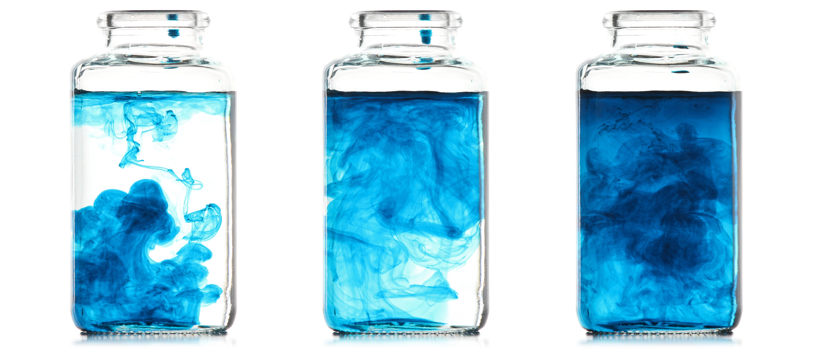

Development and optimization of human gray matter microstructure quantification using diffusion MRI
Join me for a quick tour of my PhD research, whether you're a seasoned pro or just getting your feet wet

Why it matters
Gray matter, a vital component of the brain, undergoes various changes in different conditions such as neurodegenerative diseases, psychiatric disorders, healthy brain development, aging, and brain injury. By identifying these changes in the microstructure of gray matter, we can gain a deeper understanding of early pathological changes, how the pathology spreads, the development of the brain, and ultimately, develop new diagnostic and prognostic tools. Exploring the intricacies of gray matter can unveil valuable insights into these conditions, paving the way for advancements in healthcare and improved patient outcomes.
An Introduction to Diffusion MRI
Magnetic resonance imaging (MRI) is a non-invasive medical imaging technique that produces detailed images of the body's internal structures. It works by using a strong magnetic field to align the hydrogen atoms in the body, and then applying a radio frequency pulse to knock the atoms out of alignment. When the pulses are turned off, the protons return to their aligned state, releasing energy in the form of electromagnetic signals. These signals are detected by the sensors in the MRI machine and processed to generate detailed images of the body's tissues and organs.
One type of MRI, called diffusion MRI, is used to study the movement of water molecules within the brain. Diffusion MRI works by measuring the diffusion of water molecules in different directions, and using this information to create detailed images of the brain's microstructures. These images can provide valuable insights into the structure and function of the brain, as the diffusion of water molecules is affected by the presence of various types of brain tissue, such as gray matter and white matter.
Exploring the Brain's Microstructures with diffusion...
To simplify roughly, gray matter is the part of the brain responsible for processing information, while white matter consists of long myelinated nerve fibers that connect different regions of the brain. Myelin is a sheath that insulates the axons, the branches of neurons that transmit information.

... & Biophysical Models
In physics, when dealing with a complex problem, we try to reduce it to its most remarkable characteristics. In our case, we aim to find the link between the measured signal in MRI and the properties of the brain tissue's microstructure.
To simplify the problem, we describe the brain tissue using a highly simplified geometric model, composed, for example, of spheres and sticks that hold water. The validity of certain models depends on the specific brain matter type or structure. For instance, in white matter, the myelin sheath makes the axon nearly impermeable, which facilitates signal modeling. That's why early biophysical models focused on white matter.
These models always provide the signal based on the microstructure. However, we are trying to deduce the inverse. Therefore, we employ mathematical inversion techniques, which unfortunately have limitations.
My Thesis Development
To create a realistic model of gray matter, we need to consider several contributions to the final diffusion MRI signal. We know that there are more soma (cell bodies) in gray matter than in white matter, and very little myelin, which makes the exchange between neurons and the extracellular environment more significant. Gray matter is also highly disordered, which we refer to as structural disorder.
My objective is to incorporate these contributions into our models, starting with the water exchange between nerve cells and the external environment. The goal is to validate both the model itself and the ability to invert it, meaning to be able to retrieve the parameters from the signal. I am also working on optimizing this inversion process, particularly in terms of computation time and MRI image acquisition time.